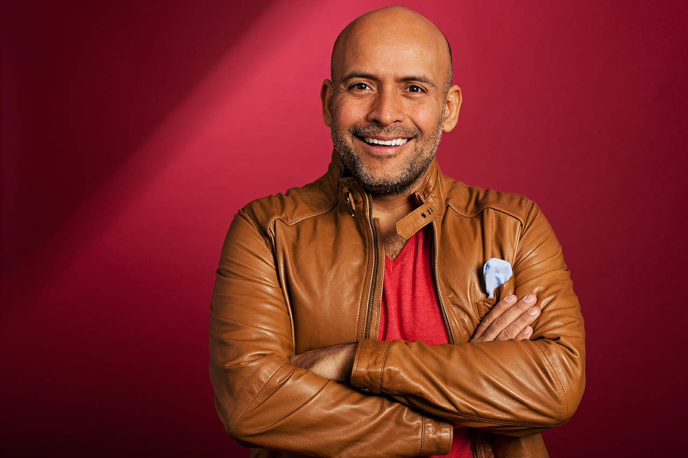

Silva Moya José Alejandro
Ingeniero en Computación. Universidad de Guadalajara. CUCEI.
Correo de contacto: alejandrosmoya@gmail.com | jose.silva5468@alumnos.udg.mx
Teléfono de contacto: 3323242100
Información Académica
- Educación Básica: Centro Educativo García Lorca.
- Educación Medio-Superior: Universidad de Guadalajara - Preparatoria #5.
- Educación Superior: Universidad de Guadalajara - Centro Universitario de Ciencias Exactas e Ingenierías.
Experiencia laboral y Proyectos
- Videojuego en Android automatizado por medio de Inteligencia Artificial.
- Simulación y aprendizaje de equilibro en un cuerpo físico por medio de Q-Learning.
- Sistema para el control de tareas y calificaciones a estudiantes, desarrollado con C# y MySQL.
- Diversos proyectos de análisis y procesamiento de datos, realizados por medio de Machine Learning.
Persona de Interés
Dante Humberto Jorgue Iván Odin Dupeyron Navarrete; actor, escritor, productor y director de teatro,
Mexicano nacido en la Ciudad de México ha trabajado en diversos medios televisivos y ha escrito sus propios
libros - entre los cuales se encuentran "Y colorín colorado, este cuento aún no se ha acabado" y
"¿Nos tomamos un café?" - y sus propias obras teatrales que llevan años en cartelera y siguen llenando
asientos - entre las cuales se encuentran "22 22", "¡A vivir!", y más recientemente "Lucas" -. Un hombre que
sabe lo que es enfrentar la vida de frente, llorar cuando es necesario, y ser feliz cuando es posible.

Puedes leer un poco más acerca de él aquí
y aquí.
Conocimientos y otros intereses
| Idiomas |
Porcentaje de Conocimiento |
| Inglés |
90% |
| Francés |
15% |
| Lenguajes de Programación |
Nivel de Experiencia |
| Python |
Alto |
| C |
Medio - alto |
| C++ |
Alto |
| Java |
Bajo |
| Ensamblador para los procesadores 8086 |
Medio - Bajo |
| Tecnologías y otros Intereses |
Área de Desarrollo |
| Desarrollo y Producción de Podcasts |
Experiencia menor a un año. Plataformas: Anchor, Spotify, Apple Podcast entre otras. |
| Ilusionismo y Magia con Cartas |
Experiencia intermitente desde hace más de 6 años. |
| Pasión por los videojuegos |
PC, Xbox, Playstation |